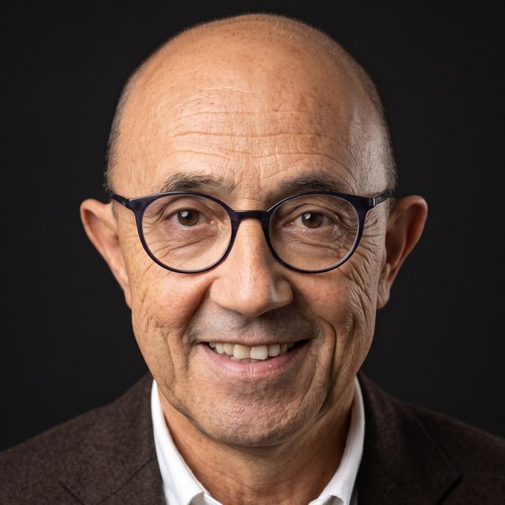
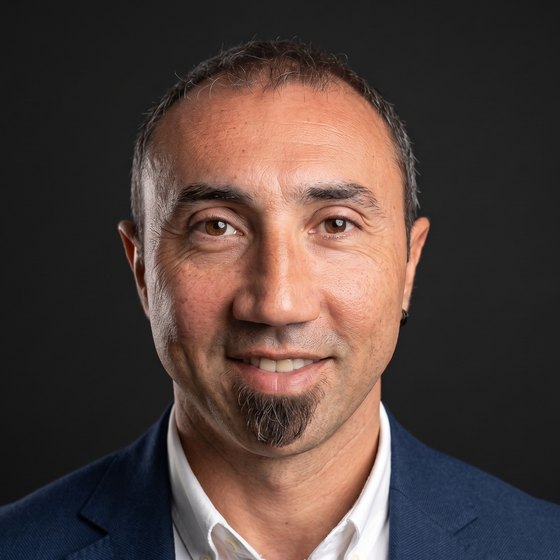
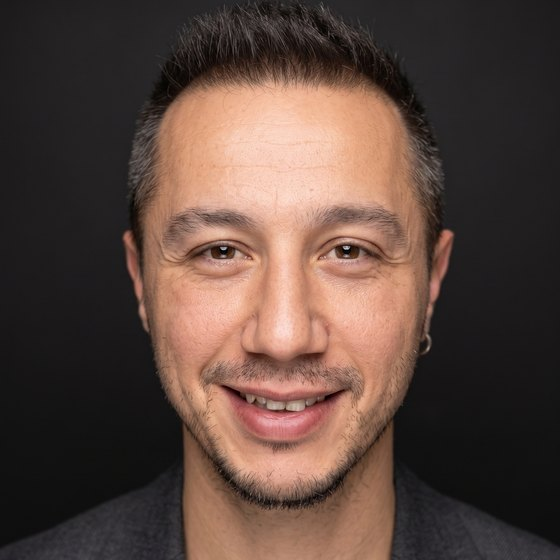

SMMMCPA
Ankara İktisadi ve Ticari İlimler Akademisi Mali Bilimler ve Muhasebe Yüksek Okulu'ndan 1981 yılında mezun oldu. 1984'te, bugünkü büronun temelini oluşturan ofisini kurdu; 1992'de Serbest Muhasebeci Mali Müşavir ruhsatını aldı. Kırk yılı aşkın meslek hayatında ticaret hukuku, vergi hukuku ile iş ve sosyal güvenlik hukuku alanlarında çalıştı. Uzmanlık alanları Türk vergi kanunları ve muhasebe standartları ile müşteri ilişkileri ve büro yönetimidir.A 1981 graduate of the School of Financial Sciences and Accounting at the Academy of Economic and Commercial Sciences in Ankara, Ahmet founded the office that became today's practice in 1984 and received his CPA licence in 1992. Over a career of more than four decades he has worked across commercial, tax, labour and social-security law. His expertise covers Turkish tax legislation and accounting standards, together with client relations and practice management.

SMMMCPA
Gazi Üniversitesi İktisadi ve İdari Bilimler Fakültesi Maliye Bölümü'nden 2007 yılında mezun oldu. 2006'dan bu yana büroda görev yapıyor; 2014'te Serbest Muhasebeci Mali Müşavir ruhsatını aldı ve 2024'te Yay SMMM'nin kurucu ortakları arasında yer aldı. Vergi hukuku ile iş ve sosyal güvenlik hukuku alanlarında çalışıyor; uzmanlık alanları sosyal güvenlik uygulamaları, iş hukuku ve bordrolama hizmetleridir.A 2007 Public Finance graduate of Gazi University, Yusuf has been with the practice since 2006, received his CPA licence in 2014 and became a founding partner of Yay SMMM in 2024. He works across tax, labour and social-security law, specialising in social-security practice, employment law and payroll services.

SMMMCPA
Orta Doğu Teknik Üniversitesi İktisat Bölümü'nden 2007 yılında mezun oldu. 2008'den bu yana büroda görev yapıyor; 2014'te Serbest Muhasebeci Mali Müşavir ruhsatını aldı ve 2024'te Yay SMMM'nin kurucu ortakları arasında yer aldı. Uluslararası finansal raporlama standartları, uluslararası vergi hukuku, çifte vergilendirmeyi önleme anlaşmaları ve yabancı çalışanların izin süreçleri alanlarında çalışıyor. Uzmanlık alanları uluslararası müşteri ilişkileri ve uluslararası raporlamadır; ileri düzey İngilizce bilmektedir.An Economics graduate of Middle East Technical University (2007), Yavuz has been with the practice since 2008, received his CPA licence in 2014 and became a founding partner of Yay SMMM in 2024. He works on international financial reporting standards, international tax law, double-taxation treaties and permit procedures for foreign employees. His expertise lies in international client relations and reporting; he is fluent in English.
İhtiyaçlarınızı değerlendirmek ve size uygun hizmet kapsamını belirlemek için görüşme planlayalım.Let us arrange a meeting to assess your requirements and define the right scope of service.